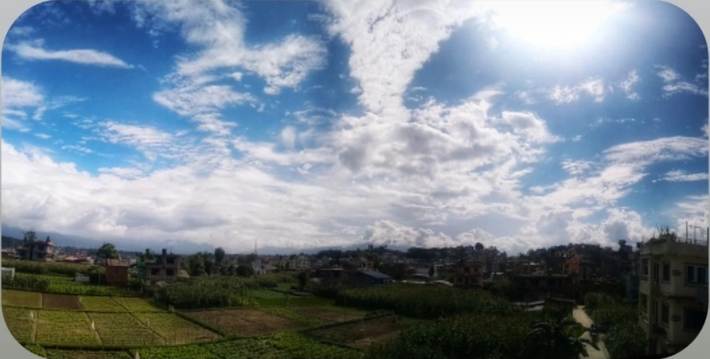
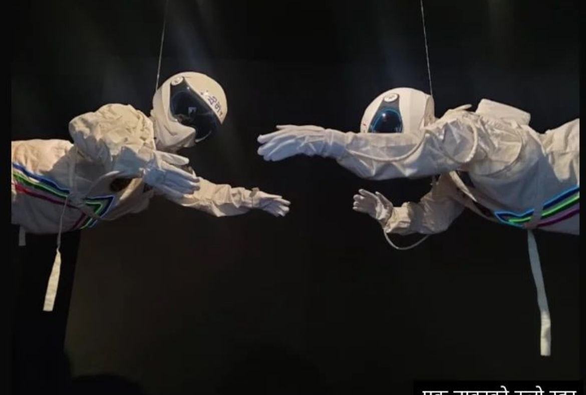

-Flag of Canada
-Fire
-Frogger Game Sprites
-Geometric Pattern

As I am interested in taking photos of natural sceneries and creative portraits, here are some of the pictures I've taken:
-Pashupatinath Temple |
-Shankata Temple |
-Boudhanath Stupa |
-Hetauda City |
-Reflection |
-View from my home |
-Sunset |
-Night sky from the top of my home |
-Astronauts at art exhibition |
I make every effort to make the most of my free time, and since I've taken a course on computer modeling and animation, I am familiar with how to use Blender and GIMP. Following are a few of the projects I've worked on:
-Flag of Canada |
-Fire |
-Frogger Game Sprites |
-Geometric Pattern |
-Bouncing Ball |
-Sword and Shield |
-Flowers |
-Crate |
-Minecraft |
-Trees |
-Sword |
-Rocks |
As a game programming student, my team and I worked together to create a Game Design Documentation for the online battle royale game Chess: Battle Royale, which is modeled after the classic speed chess game. The links to our GDD and my game pitch deck are provided below.
Game Design Documentation; Game PitchI also enjoy watching movies and writing reviews for them. I've recently seen a few films, including Reservoir Dogs, The Witch, A Man Called Ove, and The Conjuring 2. A PDF with reviews of the first three films—Reservoir Dogs, The Witch, and A Man Called Ove—is attached below.
Reservoir Dogs; The Witch; A Man Called OveIn addition, I'm making an effort to learn C++ in every way I can.I will update my new project on C++ after sometimes.